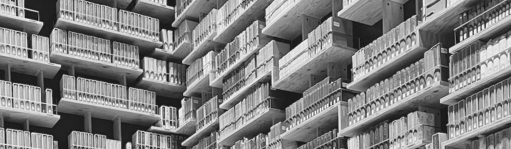

Clinical Toolbox
臨床工具箱
Established by Lin Shao-Chin · latest revision 2026.08.18
⌕
 腹部Emergency急症
腹部Emergency急症
 抗微Antimicrobials生物
急重症處置Emergency & Critical Care
抗微Antimicrobials生物
急重症處置Emergency & Critical Care
 癌症Cancer治療
癌症Cancer治療
 計分Scoring工具
計分Scoring工具

藥物資料庫Drug DatabaseAbdominal Emergencies
腹部急症
感染Infection5 項
急性闌尾炎 Appendicitis
依複雜度、族群與膿瘍年齡分流，決定手術或非手術治療（WSES 2025 Jerusalem Guidelines · JAMA Surg 2026）
急性膽囊炎 Acute Cholecystitis
先分流合併之膽道／胰臟問題，再依 TG18 嚴重度與手術風險決定早期腹腔鏡手術、膽囊引流或保守治療（TG18 · WSES · AAST）
急性大腸憩室炎 Acute Colonic Diverticulitis
依 WSES CT 分期與生理狀態決定門診治療、抗生素、經皮引流或術式，並判定非手術後之大腸評估（WSES 2020）
急性胰臟炎 Acute Pancreatitis
ERCP 適應症與膽囊切除時機、依 Revised Atlanta 嚴重度處置，及壞死感染之 step-up 引流時機（WSES 2019 · Atlanta 2012）
壞死性軟組織感染 Necrotizing Soft Tissue Infection
確立是否為壞死性後，依部位與糞便污染決定清創範圍與改道，再依再探查所見決定重複清創（WSES／SIS-E 2018）
阻塞 / 缺血 / 穿孔Obstruction · Ischemia · Perforation6 項
腸阻塞 Bowel Obstruction
先分機械性／功能性（含麻痺性腸阻塞、ACPO 與毒性巨結腸之鑑別），再定病因並判斷立即手術指標（WSES · ASCRS · MASCC · EAST）
腸扭轉 Volvulus
先以生理狀態分流，再依部位決定術式——乙狀結腸、盲腸、橫結腸、脾曲、迴腸乙狀結腸打結、小腸、中腸、胃（ASCRS 2021 · WSES 2023 · SAGES 2013）
腸套疊 Intussusception
兒童與成人分流，依超音波／CT 型態決定灌腸復位、觀察或 en-bloc 切除（APSA 2021 · 日本小兒急診 2012）
腹股溝疝氣 Groin Hernia
嵌頓／絞窄疝氣依 TAXIS 禁忌決定徒手復位或緊急手術，再依腸道存活與 CDC 傷口分類選擇修補（WSES 2017 · HerniaSurge 2023）
腸胃道缺血 GI Ischemia
分辨急性腸繫膜缺血 (AMI)、大腸缺血 (CI) 與慢性腸繫膜缺血 (CMI)，依 CTA 型態與腹膜炎決定血管內重建、抗凝或損害控制（ESVS 2025 · WSES 2022 · ACG 2015）
腸胃道穿孔 GI Perforation
依病因分流消化性潰瘍、憩室、醫源性大腸鏡與小腸穿孔，決定 NOM、引流或手術入路（WSES 2017–2020）
出血 / 創傷 / 腹腔高壓Hemorrhage · Trauma · Intra-abdominal Hypertension4 項
消化道出血 GI Bleeding
上消化道依 GBS 分流與 Forrest 分類選擇止血方式，下消化道以 Oakland score 判定可否出院（ESGE 2026 · ACG 2021 · ACG 2023）
食道急症 Esophageal Emergencies
穿孔／Boerhaave 依 Altorjay 條件決定手術與否、依位置決定術式；腐蝕性吞入採CT 優先（非內視鏡優先）以管壁不強化判定透壁壞死；異物依性質分 2 小時／24 小時兩級時限。附 Pittsburgh 嚴重度分數往返（WSES 2019，Oxford CEBM 分級而非 GRADE）
腹部創傷 Abdominal Trauma
依血行動力學反應與 E-FAST 決定是否立即剖腹，可安全影像者依 AAST-OIS 2018 分級給各臟器處置（WSES 2017–2020 · EAST 2010 · WTA 2018–2019）
腹腔內腔室症候群 IAH / ACS & Open Abdomen
依 IAP 分級與器官功能障礙區分 IAH 與 ACS，腹部打開後以 Björck 分類決定暫時性關腹與確定性關腹策略（WSACS 2013 · Björck 2016 · WSES 2018）
排程 / 分級 / 圍手術期Scheduling · Classification · Perioperative3 項
緊急手術分級 Emergency Surgery Priority Levels
依台大醫院緊急手術作業規範查詢急刀級數（第一～五級）與合理等候時間；可用病況或術式關鍵字搜尋，一般外科列於首位，另附排程與滿線徵用原則
分類與分級系統 Grading & Classification Systems
腹部急症各疾病的嚴重度分級、解剖分型與影像分期集中於一頁：AAST EGS（16 疾病）、TG18 膽囊炎／膽管炎、ASGE 總膽管結石、Parkland／Nassar、Niemeier、Mirizzi Csendes、WSES CT／Hinchey、Revised Atlanta／DBC／Balthazar CTSI、EHS／Nyhus／Gilbert-Rutkow-Robbins、Forrest；圍手術期之 Clavien-Dindo、ISREC 吻合口漏（併 ISGLS／ISGPS／ECCG 對照）、Clinical Frailty Scale；神經外傷之 Marshall CT 分類與 Rotterdam CT 分數；以及 C. difficile、腸皮／腸道－大氣瘻管、腹腔念珠菌、減重術後急症、乙狀結腸扭轉；循環之 SCAI SHOCK 心因性休克分級（A–E）
圍手術期抗栓藥物管理 Perioperative Antithrombotic Management
依藥物、CrCl 與處置出血風險輸出 DOAC／warfarin 的術前停藥天數、是否橋接、術後重啟時機，附術前用藥日曆；另含抗血小板與支架後手術延遲。刻意並列 CHEST 2022／EHRA 2021／ASRA 第 5 版三套方案而不合併——同一病人三者可差一至兩天，神經軸麻醉與機械瓣橋接的分歧另有標示。另設「急刀／反轉」分頁：以台大急刀五級對應反轉決策與劑量（idarucizumab、4F-PCC、維生素 K），標明 andexanet 已於 2025-12 退出美國市場且 ISTH 列急刀為不應使用
Emergency & Critical Care
急重症處置
休克與復甦Shock & Resuscitation7 項
ACLS Advanced Cardiovascular Life Support
依 2025 AHA CPR & ECC 官方 18 張演算法整理：成人之終止復甦、BLS、心跳停止、心搏過速／過緩、電擊整流、復甦後照護、異物哽塞、孕婦停止與 LVAD；另含兒科 PALS 與新生兒復甦。心跳停止、心搏過速與心搏過緩三張做成互動式流程，逐步選完直接給出用藥與能量。心電圖判讀圖鑑已獨立成頁（見下方「心臟」一組）
敗血性休克 Sepsis & Septic Shock Pathway
依 SSC 2026（2021 版已被取代）：抗生素時機依「可能／很可能／確定」三級分流（3 小時 vs 1 小時）、感染源控制 6 小時、30 mL/kg 平衡鹽液，到 norepinephrine → vasopressin → epinephrine 的升階；≥65 歲 MAP 目標降為 60–65、升壓劑可先走周邊靜脈
心因性休克 Cardiogenic Shock Pathway
五個分頁。辨識用 SCAI 2022 五級（血壓正常仍可能是休克，C 級以乳酸 ≥2 為界，D 級必須「經過一段時間仍失敗」）與 CPO／PAPi；病因分流逐條引用 2023 ESC ACS——立即冠脈攝影與病灶血管 PCI（I B）、機械併發症手術（I C）、無機械併發症不建議常規 IABP（III B）；支持治療兩段式（起始處方 → 1–2 小時軌跡決定升階），並守住「灌流沒回來之前不利尿、不先給強心劑」；藥物含台大仿單劑量與體重換算、每張藥卡獨立框出禁忌症（nitroglycerin 在休克是仿單禁忌）；證據並列 ECLS-SHOCK 陰性與 DanGer Shock 正面之時間差
Swan-Ganz 導管判讀 Pulmonary Artery Catheter Pathway
五個分頁。置放波形（RA→RV→PA→楔壓連續示意圖，含右心衰竭時 step-up 消失最易把 RV 誤認為 PA）；數值換算（輸入壓力與 CO 即算出 CI／SVR／PVR／DPG／CPO／PAPi／RA:PAWP／RVSWI／SvO₂ 相關參數並標示異常）；型態判讀互動流程（低血容／左心／右心／填塞／後負荷／分佈性，各附「還要驗證什麼」）＋ Forrester 四象限；異常波形圖示（巨大 v 波、TR 心室化、填塞 y 消失、收縮 vs 限制、whip、阻尼不良、over-wedging）；證據並列四個陰性 RCT 與心因性休克登錄／統合分析的落差（PACCS 仍進行中）
肺栓塞 Acute Pulmonary Embolism
依 2019 ESC 之診斷路徑（臨床機率、D-dimer、CTPA）、危險分層（休克、sPESI、右心室功能與心肌指標），到抗凝與再灌流治療與各藥物劑量
創傷大出血 Damage Control Resuscitation Pathway
依 歐洲創傷大出血指引第六版（2023）：TBI 讓每個目標反向——無 TBI 採 permissive hypotension（SBP 80–90、血小板 >50），嚴重 TBI 反而 MAP ≥80、血小板 >100。含 TXA 3 小時門檻（1g/10min＋1g/8h）、FFP:pRBC ≥1:2、fibrinogen ≤1.5 g/L 給 3–4 g、離子鈣與致命三角
血管活性藥物對照 Vasopressors, Inotropes & Inodilators
四個分頁。效應對照表把 CO／PAOP／SVR／MAP／HR／CVP／PVR 七個參數 × 十支藥排成一張矩陣（與使用者提供的院外對照表逐格比對，三格不一致處已標出理由——vasopressin 的肺阻力、「升壓劑一律走中心靜脈」、以及 mcg/min 與 mcg/kg/min 在 60 kg 病人差 60 倍）；藥物卡附台大仿單劑量、泡法與即時 mL/hr 換算，並標出台大查無的四支（phenylephrine 針劑、nitroprusside、levosimendan、angiotensin II）；另有依休克型態選藥與試驗證據
心臟Cardiac4 項
心電圖判讀圖鑑 ECG Pattern Atlas
十一個分頁、七十餘型：竇性、心房、心室、房室阻滯、束支與分支、腔室肥大、節律器、缺血梗塞、全身因素、其他型態，以及猝死型態與暈厥。每型一張依判讀準則即時合成的示意波形＋「像什麼」一句話＋判讀準則＋致病原因。猝死那一頁以 BE WHAT QT PiE 八個症候群編排，含 ARVC 的 epsilon 波、HOCM 的匕首狀 Q 波、鈉離子通道阻斷的 aVR 終末 R 波、三束支阻滯與短 QT 症候群；另含 QTc 計算器（Bazett／Fridericia／Framingham 並列）
急性冠心症 Acute Coronary Syndrome
分流、心電圖判讀、再灌流時機（直接 PCI 與溶栓）、抗栓藥物與依體重換算之劑量；另含支架置放後之 DAPT 時長與緊急 CABG 的處理
心臟衰竭 NTUH Heart Failure Guideline
臺大醫院心血管中心第三版（2026/06 修訂）互動版：定義與診斷、HFrEF／HFmrEF／HFpEF 各自的藥物治療、心律處置、急性心衰竭、共病、機械循環支持與周產期心肌病變，末附台大院內流程與文獻
節律器模式 Pacemaker Modes
六個分頁，含可互動的 NBG 五碼編碼器（選出腔室與反應即翻成白話，並對 AAI 用在房室阻滯、VVI 用在竇性心律這類會出事的組合直接示警）。模式選擇與適應症逐條標 ESC 2021／2018 ACC-AHA-HRS 的 Class；暫時性節律器含經皮、經靜脈與心臟術後心外膜線（感知度數字越小＝越敏感這一格單獨框出）；圍手術期把磁鐵放在節律器上是非同步、放在 ICD 上只停抗頻脈治療的差別放在最前面
呼吸衰竭與氣道Respiratory Failure & Airway4 項
呼吸衰竭總論 Acute Respiratory Failure Pathway
四型分類 → 病因（心因性肺水腫／COPD 急性惡化／非心因性 AHRF-ARDS／氣喘／幫浦問題／術後／休克）→ 各自的診斷、第一線支持與具體藥物劑量 → 反應評估 → 難治時才進入 ECMO 判定（VV／VA／VAV，含 ELSO 適應症與禁忌）；改善者流程即止，不會走到 ECMO
急性低血氧與 ARDS AHRF & ARDS Pathway
HFNO → 插管 → 肺保護通氣 → 俯臥 → NMBA → ECMO 的完整升階，含 EOLIA 收案條件；三份現行指引（ESICM 2023／ATS 2024／SSC 2026）在 PEEP、神經肌肉阻斷與類固醇上方向不同，本頁逐條標明出處而不合併
肺保護通氣 Lung-Protective Ventilation Pathway
預測體重與潮氣容積計算、PEEP/FiO₂ 兩張對照表，以及「調不好時怎麼辦」的四路排查——氧合不足、Pplat 過高／驅動壓偏高、呼吸性酸中毒、人機不同步；逐步數字出自 ARDSNet 協定卡（試驗方案），指引條文另行標註
快速誘導插管 Rapid Sequence Intubation
分「流程、藥物、困難氣道、特殊情境、併發症、證據」六段：誘導與肌肉鬆弛藥物依體重換算劑量，每張藥卡之禁忌症獨立框出；困難氣道與插管後低血壓、去飽和之處置一併列出
腎臟Kidney2 項
急性腎損傷 AKI & RRT Timing Pathway
先問緊急適應症、再問是否已到「不宜再等」的界線，最後才是模式與抗凝處方。五個隨機試驗顯示提早啟動不改善死亡率（STARRT-AKI 加速組 90 天仍依賴透析者反而較多），但 AKIKI-2 顯示超過寡尿 72 小時或 BUN 112 mg/dL 之後再拖有害
CRRT Continuous Renal Replacement Therapy Pathway
五個分頁，接在「該不該洗」之後講「怎麼開」。模式把 CVVH／CVVHD／CVVHDF／SCUF 的差別收斂成兩個問題（溶質靠什麼過去、液體從哪裡進）；處方分頁內建計算器——輸入體重、血流、透析液與前後稀釋，直接算出前稀釋校正後的實送劑量與濾過分率並在偏離 20–25 mL/kg/h 或 FF >25% 時示警；抗凝並列 KDIGO 2012 與 2026 草案（檸檬酸由 2B 升為 1B），附檸檬酸蓄積的判定；溶液與禁忌用台大實際品項（CVVH A／B 液、Prismasol B0、Regiocit）
肝臟Hepatology1 項
B 型肝炎用藥 Hepatitis B Antiviral Therapy Pathway
七個分頁。何時治療做成互動判定——填 HBeAg、ALT、HBV DNA、Fibroscan／FIB-4，同時算出指引分期與健保條款逐項 ✔／✘，兩者刻意分開：指引的 ALT 上限是男 35／女 25，健保用的是檢驗室上限（台大 41），ALT 70–81 的男性兩邊結論相反。依 AASLD／IDSA 2025（灰色地帶改為共同決策考慮治療、免疫耐受期 >40 歲即建議治療、不建議停藥直到 HBsAg 消失）；免疫活動期與肝硬化仍回 AASLD 2018 guidance。另含選藥（腎骨、懷孕、抗藥、失代償）、停藥六條件與復治療門檻、AGA 2025 再活化風險分層，以及健保 10.7.3／10.7.4 全條與四個與指引直接衝突之處——含第 4 項那份會讓 Viread 比 Baraclude 難過關的 15 個品名清單。頁尾附台大藥卡
神經Neurology4 項
腦出血與 SAH Spontaneous ICH & Aneurysmal SAH Pathway
兩個分頁。自發性 ICH 依 AHA/ASA 2022：抗栓逆轉是唯一 Class 1，降到 <130 mmHg 與不需開刀者輸血小板都是 Class 3 有害；cerebellar hemorrhage ≥15 mL 或壓迫 brainstem 須立即清除（Class 1），brainstem hemorrhage 指引無建議。Aneurysmal SAH 依 AHA/ASA 2023：24 小時內處理動脈瘤與 enteral nimodipine（唯一 Class 1／LOE A 藥物）；tranexamic acid、statin、magnesium 皆為 Class 3，血壓刻意沒有數字目標
創傷性腦損傷 Traumatic Brain Injury Pathway
依 Bullock 2006 手術門檻與 BTF 第 4 版／SIBICC 階梯：EDH >30 cm³、SDH 厚度 >10 mm 或 shift >5 mm、contusion >50 cm³、posterior fossa 有 mass effect 逐病灶的開刀數字；ICP >22 才治療、CPP 60–70，decompressive craniectomy 的時機決定成敗（DECRA 早期更差 vs RESCUEicp 晚期換命）；corticosteroid 屬 Level I 禁忌，TXA 只在 mild-to-moderate 有益
缺血性中風 Acute Ischemic Stroke
依 2026 AHA/ASA 分流、靜脈溶栓（alteplase／tenecteplase 各有劑量上限）、動脈取栓適應症與時間窗，以及血壓、抗栓與併發症之早期處置
癲癇重積 Seizures & Status Epilepticus Pathway
五個分頁。診斷依 NICE NG217 與 AAN／AES 2015（EEG 不可用來排除癲癇、首次發作 2 週內轉診）；分類用 ILAE 2025 新版（取代 2017，四大類 21 種發作型）與 ILAE 2015 重積四軸；重積含輸入體重即時換算一線／二線／麻醉輸注劑量與 cEEG、NCSE、超難治處置；另有藥物表與子癲症、酒精戒斷、心跳停止後（TELSTAR：抑制週期性腦波不改善預後）、腦傷後預防用藥等特殊情境
血管Vascular2 項
肢體缺血 Acute Limb Ischaemia Pathway
依 ESVS 2020：Rutherford 分級（I/IIa/IIb/III）決定速度——所有可挽救肢體先立即全身 heparin；IIa 影像後考慮導管溶栓、IIb 立即再灌流（手術取栓為主，溶栓太慢）、III 一次性截肢（勉強再灌流有害）。含 6P、Doppler 判準與腔室症候群
主動脈症候群 Acute Aortic Syndrome Pathway
依 2022 ACC/AHA：ADD-RS 勾選計分（0–3）分流影像，anti-impulse 順序不可顛倒——先 IV β 阻斷劑到 HR 60–80，血壓仍高才加血管擴張劑到 SBP <120；type A 外科急症、uncomplicated B 內科、complicated B 用 TEVAR
內分泌代謝Endocrine & Metabolic6 項
內分泌危象 Thyroid Storm & Adrenal Crisis Pathway
兩者都先治療後確診：甲狀腺風暴以 Burch-Wartofsky 分流並列出治療五面向（碘須在 thionamide 之後給）；腎上腺危機依 SfE 2016——立即 hydrocortisone 100 mg、第一小時 1000 mL 生理食鹽水，含礦皮質素時機與生病日規則
電解質急症 Hyperkalaemia & Hyponatraemia Pathway
高鉀依 UKKA 2023 五步驟（鈣鹽是 30 mL 10% 葡萄糖酸鈣不是 10 mL；calcium resonium 已不再常規使用）；低鈉依 SfE 2022（150 mL 3% 間歇推注、明確建議不要用 Adrogué-Madias 公式），並內建矯正速率追蹤——算出本 24 小時窗的上限與剩餘額度。含反彈性高鉀與過度矯正（回降、desmopressin）的處理
電解質失衡 Na · K · Cl · Ca · Mg · P Pathway
六個分頁、十二種失衡，每一種都給分級 → 鑑別路徑 → 處置三段。參考區間直接取自台大檢驗醫學部，並把台大單位混用的陷阱框出來（鈣鎂是 mmol/L、磷卻是 mg/dL）。高血鉀逐條標 UKKA 2023 的 GRADE，並誠實指出指引首選的兩種鉀結合劑台大都沒有、台大唯一有的樹脂正是指引說不要常規用的那種；高血鈣依 Endocrine Society 2023（denosumab 條件式優於雙磷酸鹽）。急救演算法不重複，指回致命電解質急症頁
輸液營養 IV Fluids & Nutrition Pathway
七個分頁（含台大 TPN 指引全文整理）。晶體輸液把 N/S、half saline、D5W、Dext-saline、L/R、Ringer's 與 Taita 1–5 號放進同一張表（Taita 數字取自食藥署仿單原表，且台大有兩支電解質不同的乳酸林格）；靜脈營養液比較 Bfluid／Clinimix／Oliclinomel／Nutriflex／Smoflipid，用滲透壓 800 mOsm/L 這條線決定周邊或中央；添加劑點名 Lyo-Povigent 含維生素 K₁、其 thiamine 不足以預防再餵食；計算器把 propofol 的脂肪也算進 1.5 g/kg/d 額度。ESPEN 2023 R8（Grade A）：早期全量 EN 與 PN 都不可用
高血糖危象 DKA & HHS Pathway
依 ADA／EASD 2024 共識（2009 年以來首次更新）：血糖門檻降為 ≥200、酮體改用定量 β-羥丁酸、陰離子間隙不再是第一線判準；含依血鉀決定能否開始胰島素、平衡鹽優於生理食鹽水、以及酸中毒停滯時如何分辨高氯性酸中毒
糖尿病用藥 Type 2 Diabetes Pharmacotherapy Pathway
九個分頁。選藥做成可複選的共病選單——勾 ASCVD／心衰竭／CKD／MASH 加上 eGFR、UACR、A1C、血鉀，即時算出優先用藥、腎功能門檻與健保是否給付。依 ADA Standards of Care 2026 逐條標建議編號與證據等級，並點出三個常被寫錯的數字：住院非重症目標是 100–180 不是 140–180、ADA 的住院起始劑量是 0.3–0.6 U/kg/day、over-basalization 的「>0.5 U/kg」門檻 ADA 已經刪掉。手術分頁給逐藥停藥表、胰島素 80% 規則、兩版互相衝突的 VRIII 速率表、SGLT2i 停幾天的五種答案與 GLP-1 麻醉前禁食的四份矛盾文件。健保分頁逐條列出指引與給付的七個明確衝突（含「口服藥最多四種」該款已於 114/6/1 刪除）
Scoring Tools
計分工具
⌕
沒有符合的計分工具，換個關鍵字或用主選單的全站查詢試試。
一般計算General Calculations5 項
動脈血氣分析判讀 ABG interpretation · Acid–base
輸入 pH／PaCO₂／HCO₃⁻ 即判出是哪一型（含急性／慢性呼吸性障礙與混合型），並以 Winter's 等六條代償公式抓出被蓋住的第二個障礙；再由白蛋白校正後的陰離子間隙與 delta gap 自動分流到 GOLDMARK（含滲透壓間隙）、尿液陰離子間隙／RTA 分型或尿液氯
體型與劑量體重 BMI · BSA · IBW · ABW
一次算出 BMI（國民健康署體位分類＋WHO 亞洲切點）、BSA（Mosteller 與 Du Bois 並列）、IBW／ABW／LBW，並直接給出 6 mL/kg PBW 的潮氣容積與「實際體重是 IBW 的幾 %、該不該改用 ABW」的判斷
藥物劑量換算 Steroid · Opioid · Loop Diuretic
三類藥物選「從哪一種換到哪一種」即出等效劑量。類固醇同時顯示礦皮質素活性與作用時間並不等效；鴉片類依 CDC 2022 MME 係數算出每日當量後，把「等效劑量」與「折減 25–50% 後的建議起始劑量」分成兩個數字（methadone／buprenorphine 刻意不提供換入）
校正鈉／校正鈣 Corrected Sodium & Calcium
高血糖之校正鈉並列 Katz 1.6 與 Hillier 實測的 2.4（血糖 >400 另有提示）；校正鈣依台大的 mmol/L 報告單位計算並可切換 mg/dL，同時標明危重症與 CRRT 下應直接驗游離鈣的理由
血清滲透壓與滲透壓間隙 Osmolality & Osmolal Gap
計算滲透壓、有效滲透壓（tonicity，不含尿素）與滲透壓間隙三者分開呈現；並列兩條常見公式讓你看到間隙隨公式而變，另附由間隙回推毒性酒精濃度。間隙正常不可用來排除毒性酒精中毒（Hoffman 1993 原始結論）
急性冠心症Acute Coronary Syndrome1 項
GRACE Global Registry of Acute Coronary Events
以年齡、心跳、血壓、肌酸酐、Killip 分級等推估住院與 6 個月死亡風險；> 140 為高風險，NSTE-ACS 建議 24 小時內冠狀動脈攝影
肺栓塞Pulmonary Embolism4 項
Wells Score (PE) Clinical Probability of PE
七項準則推估肺栓塞臨床機率，同時顯示三分法與兩分法；決定該驗 D-dimer 還是直接做 CTPA
Revised Geneva Revised & Simplified Geneva Score
完整版與簡化版並列計算的肺栓塞臨床機率；全為客觀項目，不含「PE 是否為最可能診斷」的主觀判斷
PERC Rule PE Rule-out Criteria
臨床機率已為低時，八項全陰即可不驗 D-dimer 直接排除 PE（漏診率 < 2%）；全有全無的門檻，任一項陽性即不成立
PESI／sPESI PE Severity Index
確診 PE 後的30 天死亡風險分層：原始 PESI（11 項 → Class I–V）與簡化 sPESI（6 項 → 二分）並列，同一組輸入自動換算；抓出可早期出院／門診治療的低危族群，並對接 2019 ESC 的中危分層
創傷 / 出血Trauma & Hemostasis2 項
抗凝／抗血小板逆轉 Antithrombotic Reversal
依 ACC 2020 出血決策路徑選藥即出方案：VKA 的 4F-PCC 依 INR（25/35/50 U/kg）＋vitamin K、dabigatran 的 idarucizumab 5 g、FXa 抑制劑的 andexanet 高/低劑量（依劑量與最後服藥時間）；含肝素、抗血小板（PATCH）與溶栓相關出血
燒燙傷補液 Burn Shock Resuscitation
輸入體重與 %TBSA 即算 ABA 2024 起始 2 mL/kg/% 與 Parkland 對照的 24 小時量與前/後段速率（含受傷後已過時間修正）；附 rule of nines、尿量終點與 ABA 轉診條件
共病評估Comorbidity1 項
Charlson 共病指數 Charlson Comorbidity Index (CCI)
勾選共病項目計算指數，評估共病負荷與10年預估存活率，常用於研究校正與術前風險溝通。注意：與「綜合併發症指數 CCI」同縮寫但完全不同，後者評的是術後併發症負荷
神經Neurology1 項
NIHSS NIH Stroke Scale
15 個項目、0–42 分，含 UN（截肢／插管）不計入總分的處理。標明語言項目權重 9 分而忽略與視野僅 4 分——右半球與後循環中風分數系統性偏低；治療決策看的是失能性缺損而非分數高低
腎臟Kidney3 項
eGFR 2021 CKD-EPI cr / cr-cys
與台大檢驗報告同一條公式（≥18 歲採 2021 CKD-EPI）；填入 cystatin C 即自動改用雙標記式並顯示兩式差距與該懷疑哪個標記受干擾。另附 Cockcroft-Gault 與「未經體表面積校正的 GFR」供藥物劑量調整
FeNa／FeUN Fractional Excretion of Na / Urea
腎前性與 ATN 之鑑別。刻意並列兩篇結論相反的研究——Carvounis 2002 支持「用利尿劑就改看 FeUN」（89% 的腎前性＋利尿劑者 FeUN ≤35%），Pépin 2007 卻顯示其特異度僅 33%、明言不能替代；另列 FeNa 偽低／偽高的完整清單
高血鈉自由水缺乏 Free Water Deficit
算出缺水量、Adrogué-Madias 每公升輸液的血鈉變化、本日允許降幅所需的輸液量與速率。並標明證據落差：Chauhan 2019 在重症成人未找到快速矯正造成腦水腫的病例，但兒童仍須嚴格限速；公式不含持續損失，必須量測補回
重症 / 多器官功能Critical Care9 項
Burch-Wartofsky BWPS for Thyroid Storm
甲狀腺風暴的計分（≥45 高度提示、25–44 即將發生、<25 不太可能）；當代研究中 ≥45 敏感度 99% 但特異度僅 12%——是篩檢工具不是診斷準則。含誘發事件與心房顫動獨立計分的提醒
DKA／HHS 診斷與嚴重度 Hyperglycemic Crisis Criteria
依 2024 共識報告判定 DKA（D／K／A 三項）與 HHS（四項），自動計算有效與總滲透壓並給出建議照護層級；含血糖正常型 DKA 的辨識與「陰離子間隙不可作為緩解判準」的說明
KDIGO AKI 分期 KDIGO AKI Staging
肌酸酐與尿量各自判期後取較嚴重者；含 48 小時 ≥0.3 mg/dL 的絕對上升判準、開始 RRT 即列第 3 期，以及基準肌酸酐取法造成的誤差說明（KDIGO 2026 改版仍在草案階段，本頁依 2012 版）
ARDS 診斷與分級 ARDS New Global Definition
依 2024 新全球定義判定是否成立 ARDS 與嚴重度：可用 SpO₂/FiO₂ 取代動脈血氣、納入未插管（HFNO ≥30 L/min）與資源受限判準，含氧流速估算 FiO₂ 與海拔校正；並列 Berlin 2012 對照
ROX Index HFNC Outcome Index
(SpO₂/FiO₂) ÷ 呼吸速率，用於及早辨識高流量鼻導管注定失敗的病人；失敗切點隨時點上升（2h <2.85／6h <3.47／12h <3.85），≥4.88 與較低插管風險相關
NEWS2 National Early Warning Score 2
七項生理參數的病情惡化預警分數；SSC 2026 指名 NEWS／NEWS2／MEWS／SIRS 作為敗血症篩檢工具優於 qSOFA。含 SpO₂ Scale 2（高碳酸血症呼吸衰竭專用）與各分數對應的監測頻率與升階層級
SOFA Sequential Organ Failure Assessment
六大器官系統評分；疑似感染病人SOFA上升≥2分，符合Sepsis-3敗血症定義
APACHE II Acute Physiology & Chronic Health Eval.
評估ICU入住24小時內疾病嚴重度，分數越高住院死亡風險越高
Vasopressor Calc Vasoactive-Inotropic Score
計算多重升壓/強心藥物流速並加總VIS，數值越高代表循環支持需求越大
一般手術風險Surgical Risk4 項
NELA PRS NELA Parsimonious Risk Score
急診剖腹術後 30 天死亡率預測，13 項術前變項。本頁為 2023 年 4 月起的新版 PRS，2018 年舊版已由 NELA 明令停用；含 5%／10% 高風險門檻與未經台灣族群校準之警示
P-POSSUM Portsmouth POSSUM
預測手術術後 30 天死亡率，常用於手術品質稽核與族群風險校正
SORT Surgical Outcome Risk Tool
以 ASA、緊急度、手術別與嚴重度、癌症、年齡預估 30 天全因死亡率，用於術前風險溝通與稽核校正
WSACS IAH IAH / ACS Grading
輸入 IAP 與 MAP 判定 IAH 分級（Grade I–IV）、是否成立 ACS 與 APP；含 primary／secondary／recurrent 分類對減壓時機的影響、WSACS 完整風險因子清單，以及兒童專屬閾值（兒科小組未採納成人分級，故兒童模式不輸出 Grade）
圍手術期 / 併發症Perioperative & Complications5 項
營養風險評估 NRS-2002 · GLIM · Refeeding Risk
NRS-2002 篩檢（含最常被刪掉的疾病嚴重度原型描述）、GLIM 診斷與嚴重度分級（內建亞洲 BMI 切點）、再餵食風險。NICE 與 ASPEN 刻意分開計算不合併——兩者對「餵食前要不要先矯正低電解質」是相反的指令。外科依據為 ESPEN 2025 更新版（非 2017／2021），術前靜脈營養療程已改為 10–14 天
VTE 風險評估 Caprini · Padua · IMPROVE Bleeding
外科用 Caprini 2005（AT9 收錄版）決定預防強度、內科用 Padua、以 IMPROVE 評出血風險；含腹腔／骨盆腔癌症手術之延長預防。刻意並列兩套互不相容的 Caprini 分級——同為 3–4 分，AT9 稱「中度約 3%」而 Bahl 稱「高度 0.97%」；另標示 AT9 的 ≥5 分給藥門檻與 Pannucci 統合分析「≥7 分才有顯著效益」之落差
CHA₂DS₂-VASc Stroke Risk in Atrial Fibrillation
同時算出 CHA₂DS₂-VASc（滿分 9，含性別）與 ESC 2024 改用的 CHA₂DS₂-VA（滿分 8），並分列 ESC 2024／ACC AHA 2023／APHRS 2021 三套門檻——同一位女病人兩套差一分，且 APHRS（台灣主導）在低分時比歐美更早介入。刻意不印每分年中風率表（兩份現行指引皆已不印，跨世代差距達 60 倍）
HAS-BLED Bleeding Risk in Atrial Fibrillation
逐項計分並單獨列出可矯正的出血因子與矯正後可降到幾分。標明現行指引立場：ESC 2024 已不再納入任何結構化出血風險分數、不建議僅憑出血因子停用抗凝；≥3 分的意思是「矯正因子＋提早追蹤」，不是停藥。含原文的 SI 單位換算（Cr >200 µmol/L ＝ >2.26 mg/dL）
CCI 綜合併發症指數 Comprehensive Complication Index
依 Clavien-Dindo 分級輸入各級併發症件數，合併為 0–100 連續量尺。彌補「只取最高級」遺失累積負荷的問題。與 Charlson 共病指數同縮寫但完全不同
闌尾炎Appendicitis4 項
AAS Adult Appendicitis Score
以性別年齡調整之成人分數（0–24），AUC 0.882 優於 Alvarado 與 AIR；≥16 高度可能、≥18 原文認為可直接手術
Alvarado Alvarado Score
評估急性闌尾炎機率，≥7分建議外科會診，敏感度高但特異度較AIR score低
AIR Score Appendicitis Inflammatory Response
發炎反應導向之闌尾炎評分，特異度優於Alvarado，9–12分高度懷疑闌尾炎
pARC Pediatric Appendicitis Risk Calculator
以連續機率量表評估5–18歲兒童闌尾炎風險，較PAS更能區分高低風險族群
消化性潰瘍穿孔Peptic Ulcer Perforation1 項
PULP Score Peptic Ulcer Perforation Score
預測消化性潰瘍穿孔30天死亡率，表現優於傳統Boey score與ASA分級
腹膜炎Peritonitis3 項
Candida Score Candida Score & Colonization Index
非嗜中性球低下危重病人之侵襲性念珠菌感染風險。經驗證的用途是「排除」而非啟動治療；含 2006 迴歸係數版與 2009 整數版的差異、以及 Pittet 移生指數
MPI Mannheim Peritonitis Index
評估腹膜炎嚴重度並預測死亡率，分數越高（0–47分）預後越差
WSES Sepsis Score WSES Sepsis Severity Score
評估複雜性腹內感染之敗血症嚴重度，用於預測死亡率與器官衰竭風險
消化道出血GI Bleeding4 項
Glasgow-Blatchford Glasgow-Blatchford Score
上消化道出血內視鏡前風險分層，預測是否需住院介入或死亡；≤1 分可考慮門診處理，各分數中鑑別力最佳（AUROC 0.86）
Rockall Score Rockall Score
上消化道出血死亡與再出血風險分層，分內視鏡前（0–7）與完整（0–11）兩段；休克分級由血壓心跳自動判定，避免常見的抄錯
AIMS65 AIMS65 Score
上消化道出血住院死亡率預測（白蛋白、INR、意識、收縮壓、年齡各 1 分）；預測死亡優於 GBS，≥2 分為高風險
Oakland Score Oakland Score
下消化道出血安全出院評估（0–35 分，越低越安全）；≤8 分約 95% 機率可安全出院，血紅素權重最重
腸阻塞Bowel Obstruction3 項
Wassmer Score Clinical Severity Score for SBO
預測黏連性小腸阻塞是否需手術切除腸段，≥4分列為高風險
Angers CT Score Angers CT Score
依CT影像特徵預測黏連性小腸阻塞保守治療失敗風險，≥5分為高風險
Millet Score Combined CT Findings for Strangulation
結合3項CT徵象評估小腸阻塞絞窄風險，三項皆無時可高信心排除絞窄
腸繫膜缺血Mesenteric Ischemia2 項
RADIAL Score RADIAL Score for AMI Mortality
預測急性腸繫膜缺血住院死亡率，分數越高（0–13分）死亡率越高
AMI Diagnostic Score Novel Scoring System for AMI Diagnosis
以常規血液檢驗（WBC、RDW、MPV、D-dimer）輔助急診鑑別急性腸繫膜缺血
肝臟Hepatology4 項
FIB-4 Fibrosis-4 Index
進行性肝纖維化的非侵入性初篩。並列兩套切點——脂肪肝（MASLD）用 1.30／2.67、原始 HIV/HCV 用 1.45／3.25，依病因自動選讀；≥65 歲自動改用 2.0 低風險切點，<35 歲標示敏感度不足。中間帶必須做彈性造影或 ELF，不可停在這一步
急性肝衰竭 Acute Liver Failure
King's College Criteria 移植判準（acetaminophen 與非 acetaminophen 分軌，自動判陽性/未達）；KCC 陰性不排除移植需求。含 NAC 適應症、肝性腦病與顱內壓管理、病因專屬治療（O'Grady 1989／ACG 2023）
Child-Pugh Child-Pugh Score
評估肝硬化嚴重度分級A/B/C，C級病人手術風險顯著升高
MELD 3.0 Model for End-Stage Liver Disease 3.0
計算終末期肝病死亡風險，用於肝移植等候名單優先順序排序
胰臟炎Pancreatitis1 項
Modified Marshall Score Organ Failure in Acute Pancreatitis
Revised Atlanta 2012 定義器官衰竭之評分：呼吸（PaO₂/FiO₂）、腎臟（Cr）、心血管（收縮壓）任一項 ≥2 分即為器官衰竭；持續 >48 小時為重度
壞死性軟組織感染Necrotizing Soft Tissue Infection2 項
LRINEC Laboratory Risk Indicator for Necrotizing Fasciitis
以 CRP／WBC／Hb／Na／Cr／Glucose 六項常規檢驗（0–13 分）提高壞死性感染的警覺；敏感度僅 68%，不可用於排除診斷
FGSI / UFGSI Fournier's Gangrene Severity Index · Uludağ
Fournier's gangrene 預後分層：九項生理參數加總（FGSI），再加侵犯範圍與年齡（UFGSI）；用於加護病房收治判斷，非手術判準